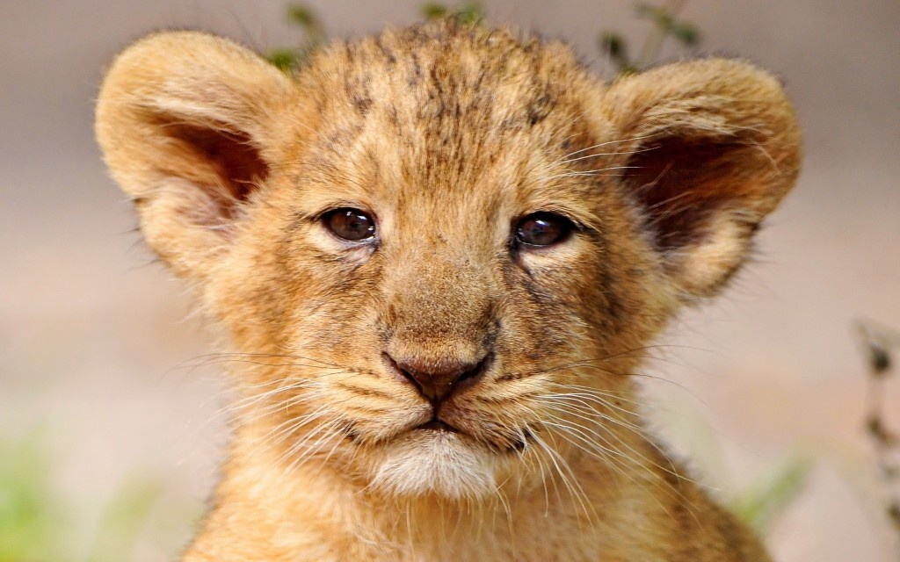

Quiz: Leão  Qual é a média de idade de vida de um Leão? 37 anos 68 anos 18 anos Em qual continente a maioria dos leões vive? Continente Africano Continente Asiatico Continente Sul Americano Quantas espécies de leão existem no mundo? 8 espécies 10 espécies 1 espécie Quantos quilos pesa um leão adulto? 190 quilos 230 quilos 280 quilos Quantos quilos de comida um leão precisa comer por dia? 28 quilos 35 quilos 43 quilos Qual é o comprimento médio, em metros, de um leão adulto? 2,45 metros 2,00 metros 2,17 metros Quantos filhotes nascem em cada ninhada? 1 a 3 filhotes 2 a 4 filhotes 4 a 6 filhotes Qual o período de gestação dos leões? 40 a 80 dias 100 a 120 dias 80 a 100 dias Qual a velocidade média de um leão adulto? 73 km/h 66 km/h 58 km/h Qual a atual população de leões ao redor do mundo? 20 mil 8 mil 15 mil Enviar respostas